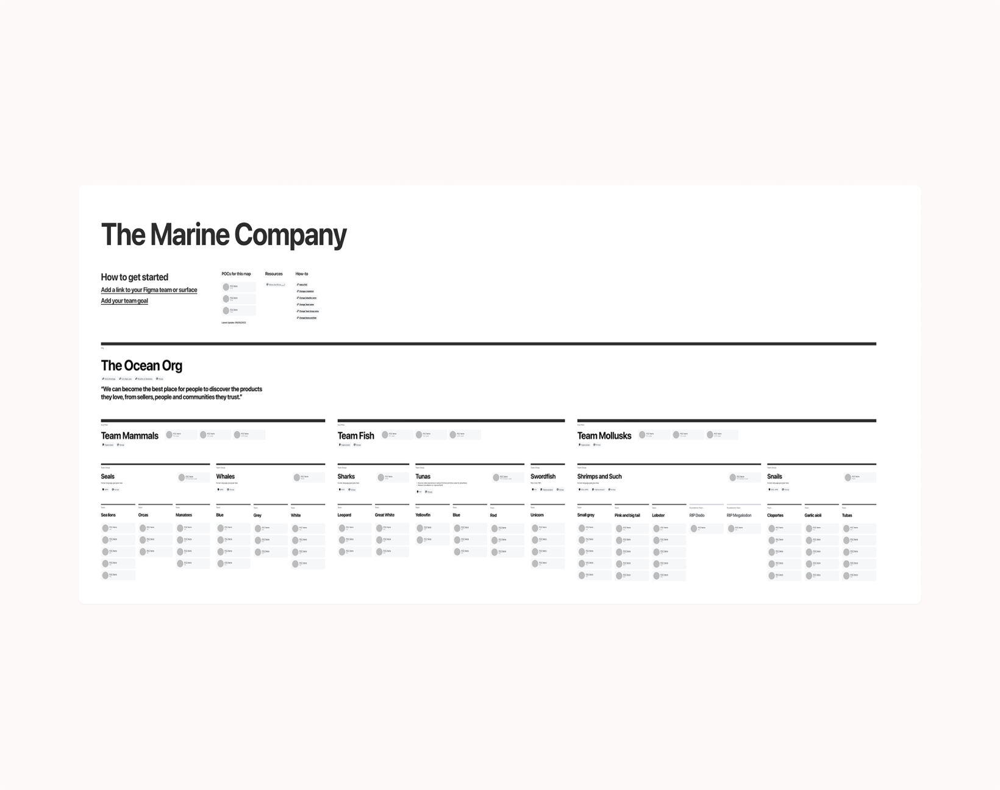
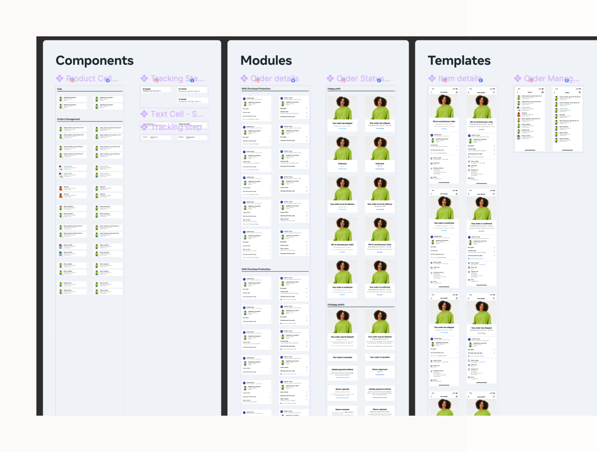
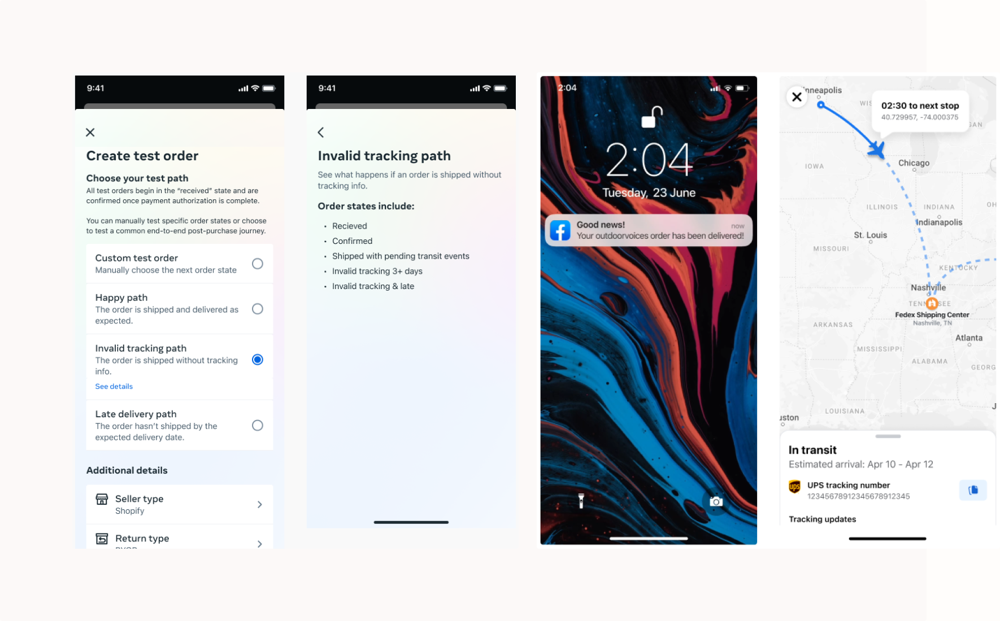

At Meta, I helped the Commerce team build faster, building a more consistent product. I created the Post-Purchase team’s central source of truth, a comprehensive product system and resources that improved team efficiency.

Too much of our team’s time was spent tracking down the owners and latest designs for different surfaces across our product. To solve this, I created a live, interactive directory of people, teams and surface owners.

I created the team’s central source of truth for product states and flows, open to every team, and a comprehensive component system that allowed us to build a more consistent product, faster.

Our ad-hoc, cross-functional team came together to design and prototype an internal dogfooding tool that allowed us to create test orders and rapidly move through states and order progress seamlessly.
It saved the team time, set shared processes, and gave the org one place to find people, flows and libraries.